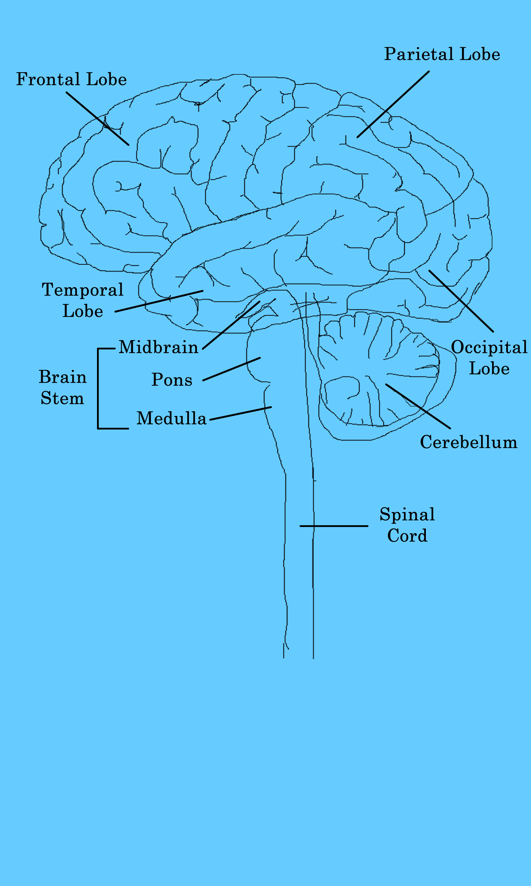

Animal Physiology
Central Nervous System

Central Nervous System
- The CNS mainly consists of the brain and the spinal cord, and is contained within the cranial and spi
- It is responsible for integrating the information it receives from, and coordinates and influences the activity of, all parts of the body
- The brain consists of grey matter and white matter
- Grey matter mainly consisters of neurons or cell bodies
- White matter, on the other hand, has less cell bodies and more long range myelinated axons
- The brain is further divided into the following:
- Frontal Lobe: Located at the front of the brain, and contains the motor cortext in addition to being responsible for conscious decision making
- Parietal Lobe: Located at the top/back of the brain, it contains